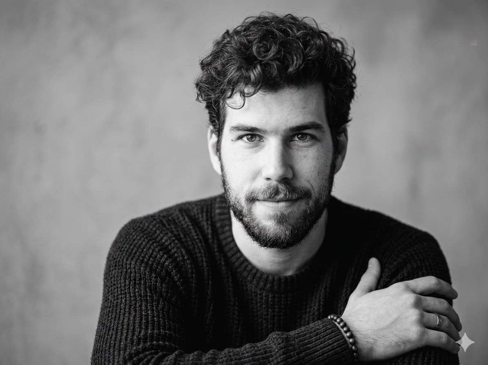

Plant Jammer
CTO / Co-founderTurned word2vec into a food recommender engine. Built the entire backend from zero and owned it through €4M in funding, 150k+ users across 3 consumer apps, and a B2B API. Topped app store charts in multiple markets.

Tech founder with community roots
Prague, Bohemia
In 2016 at the age of 22 I joined Michael Haase to build Plant Jammer. We helped people learn to cook with less meat and foodwaste. I figured out a way to pair ingredients by turning word2vec into a recommender engine, and built a greenfield backend from scratch. Eventually I grew into a CTO role and a co-founder. We had over 150k users across 3 consumer apps, plus a SaaS API. Despite €4M in pre-seed and topping app store charts, we failed on the business side.
I signed up for a PhD with the goal of studying the psychological impact of LLMs, but I didn’t meet likeminded people who’d take it seriously back in ’22. I noticed the disinterest and dropped out quickly. During that time I worked in a small team with Akimitsu Sano on his Moment project.
In my last job I built an agentic system to drive HR conversations. That’s 2 years spent on prompting, tools and RAG — and I’m still writing this text by hand.
At present I lead workshops on AI automation and build for fun. Recently I’ve built a P2P voice-only omegle clone, a skill-tree interface for modular video lectures, a physics-based text animation engine, or a voice-over and usage dashboard for Claude Code.
Apart from that I climb rocks, read about philosophy of mind and I write. A byproduct of the writing is a 10k Instagram community around my poetry.
Turned word2vec into a food recommender engine. Built the entire backend from zero and owned it through €4M in funding, 150k+ users across 3 consumer apps, and a B2B API. Topped app store charts in multiple markets.
A Warcraft III–themed companion app for Claude Code. Assigns characters to coding sessions and plays Czech voice lines on hook events. 341 curated sound transcriptions.
Live coding music workbench built on top of strudel.cc. Multi-track mixer with real-time sync and audio-reactive curl noise particle visualization.
Czech poetry on Instagram. What started as a writing habit became a 10k community. 574 posts, each hand-written, with an OCR pipeline for full-text search across the archive.
A collection of scroll-driven text animations built with real physics — Langevin dynamics, curl noise particle systems, orbital mechanics, thermal simulations. Each experiment turns typography into a physical object that responds to forces.
P2P voice-only chatroulette. Two strangers connect and talk — zero UI, just a black screen with a breathing liquid orb that distorts to audio. Built on WebRTC with Cloudflare Workers and Durable Objects for signaling.